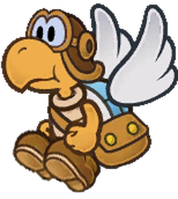
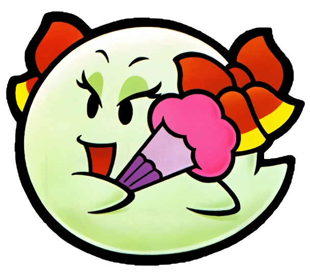

So who's helping Mario beat Bowser and rescure the princess?
Throughout his quest Mario encounters a wide swath of creatures willing to assist him on his journey. Some of them are familiar enemies from the series taking on a new role in helping Mario! Pretty much everyone wants to help Mario wherever he goes, but here are the main eight that really pull their weight!
|
Goombario is a friendly Goomba hoping to help Mario save Peach. He knows all sorts of useful information about enemies and locales. |
Kooper is a blue-shelled Koopa hailing from Koopa Town. You can kick him to trigger faraway switches and pick up out of reach items. |

Parakarry is a faithful servant of the Mushroom Kingdom Postal Service. He can use his wings to carry Mario over short gaps. |

Bow is the Duchess of Boo Mansion. She can hover over Mario to make him invisible, useful for avoiding baddies and obstacles! |
|
Mario saves Watt from a Lantern Ghost in Shy Guy's Toybox. Watt can illuminate dark areas and cause hidden blocks to appear! |

Sushie is a Cheep Cheep that teams up with Mario after he helps save the child Yoshis on Lavalava Island. She helps Mario cross large bodies of water. |

Lakilester is a Lakitu that teams up with Mario to defeat the sinister Huff N. Puff! Mario can ride on his cloud to hover over obstacles and get an increase in speed. |
Princess Peach and a star spirit named Twink aid Mario throughout his quest. They get into a variety of hijinks around Bowser's Castle including baking a cake and reading Bowser's diary! |